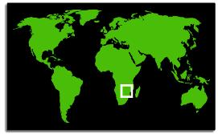

|
Lost Civilizations of Africa and Eurasia  
Dr. Ruben Mendoza California State University Monterey Bay Spring, 1999
Tuesdays, 5:00-7:50 p.m. Building 15, Rm. 122 SBSC 383, Sec. 1, 4 Credits
Description Outcomes Assessment Student Reports
|
African Civilizations Slide Shows In order to view each weeks slide show, simply click on the Topic title. Once you arrive at the slide show location, you can use any of the gold buttons at the top of the page to either "download" a copy of the show, or advance through the show automatically or manually.
Week 1 Introducing African
Civilizations
Week 2 Concepts, Questions and Issues in the Study of African Civilizations
Week 3 Archaeology, Historiography and the Afrocentric Idea
Week 4 Egypt and the Evolution of Archaic States and African Chiefdoms
Week 5 Development of States and Urbanism in Sub-Saharan Africa
Week 6 Ethiopia and the Emergence of the Axumite Civilization
Week 7 Western African States and Civilizations
Week 8 Benin Civilization and the Walled City of Ife
Week 9 Swahili Civilization, Islam, and the East African Coast
Week 10 Great Zimbabwe and the Zambezian State
Week 11 Other Precolonial Cities and States in Tropical Africa
Week 12 African Indigenous Science and Knowledge Systems
Week 13 Museums and Archaeology in West Africa
Week 14 Museums and the Management of the African Archaeological Heritage
Week 15 Museums, Archaeology, and Public Education
Week 16 Major Deliverable 4: Final Project, Oral Report, and Semester Portfolio |